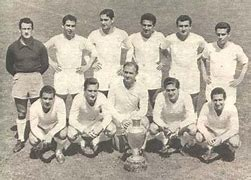
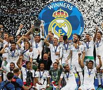
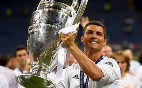

Click aqui para volver al inicio
6.Champions League
La Champions League se funda en 1955 con el Madrid como su primer vencedor

Su máximo ganador es el Real Madrid con un total de 15 títulos

Siendo su máximo goleador Cristiano Ronaldo con 130 goles
